She is not a professional photographer, but she uses her camera to redefine childhood. Iwona Podlasińska comes from Poland. She was an architect, but she picked up a camera after becoming a mother, and quietly became a world-famous expert at photographing children. With a mother's intuition and an architect's eye for composition, she captures small but shining moments in the world of children, turning everyday life into scenes like a fairy tale. Iwona refuses to stage shots, and she never tells her children to look at the camera and smile. She is like a quiet observer. In an almost documentary way, she waits and captures a child's most genuine emotions, focused exploration, sudden mischief, and the occasional temper. She said: “I am more like a wildlife photographer.” It is exactly this respect for truth that fills her photos with moving life. Through her lens, childhood does not have to be perfect, but it must be real. Days look ordinary, yet magic hides everywhere. As she believes: the best fairy tale lives in a child's eyes.
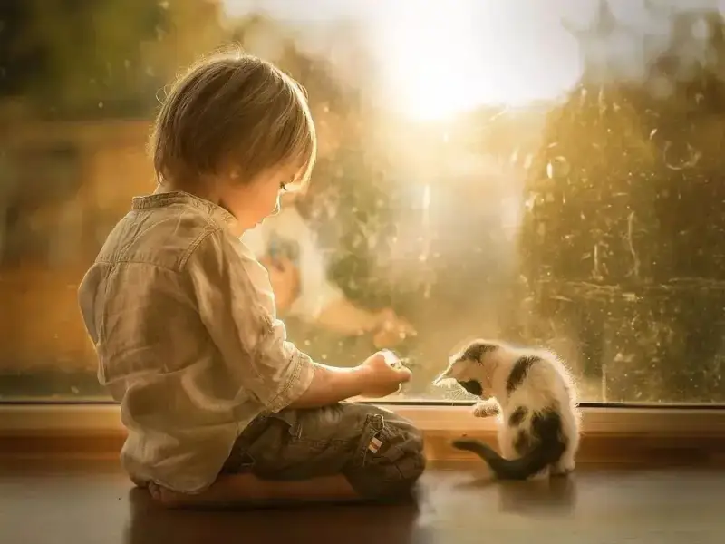
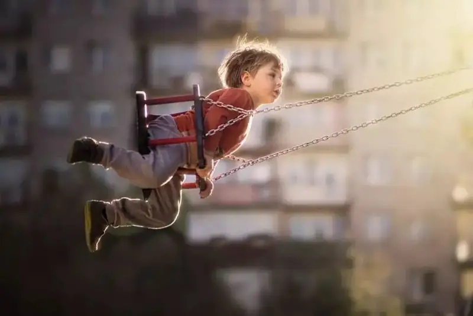
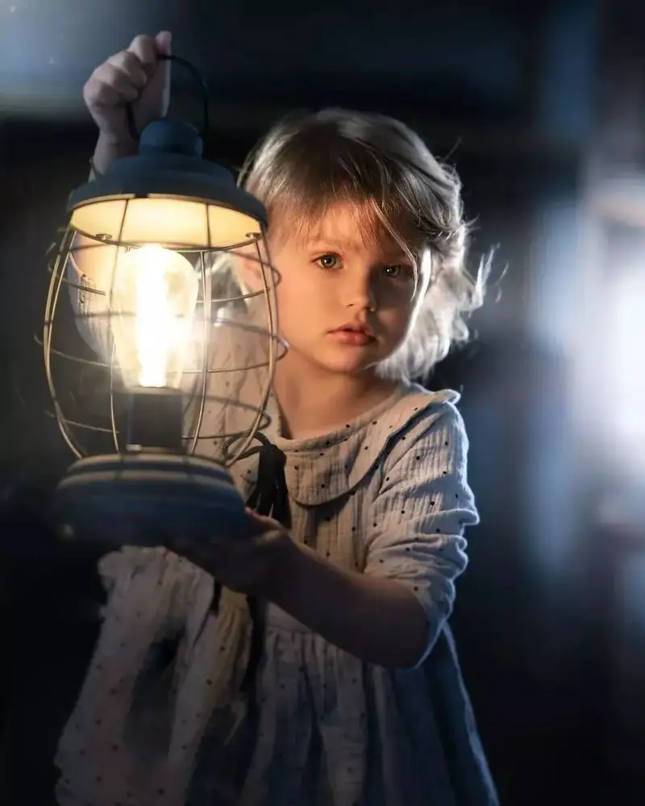
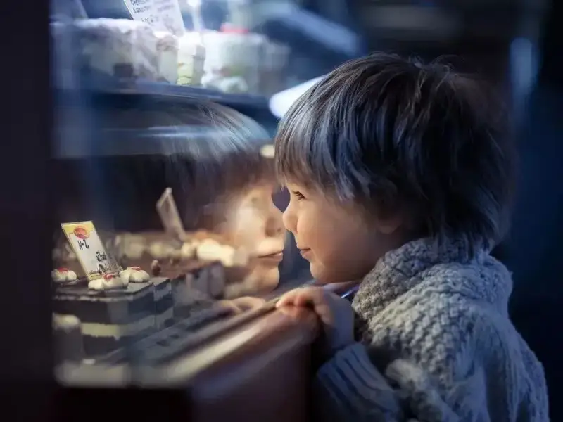
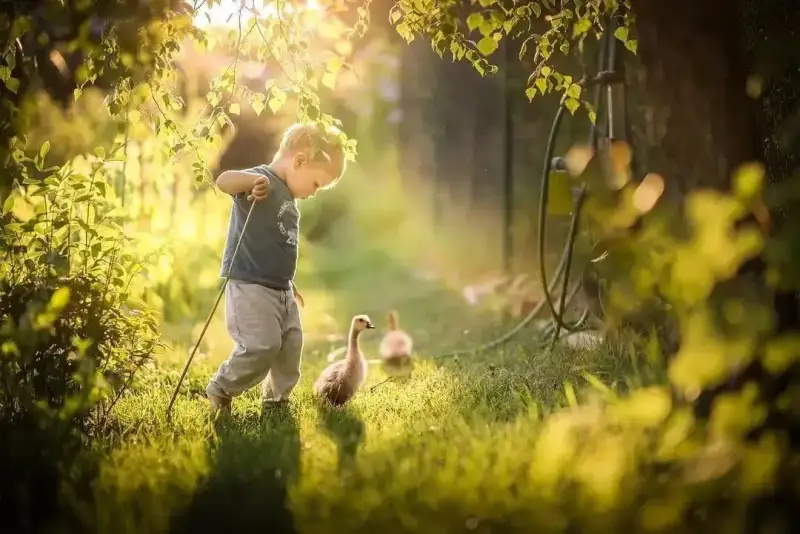
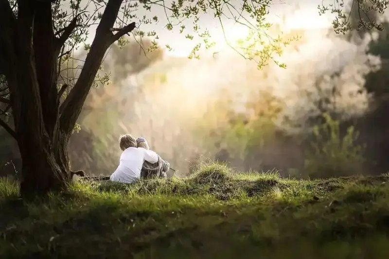
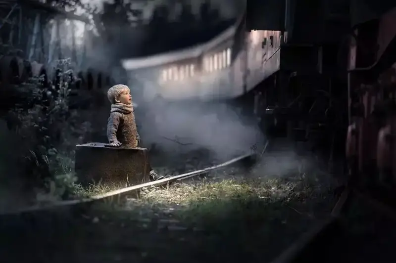
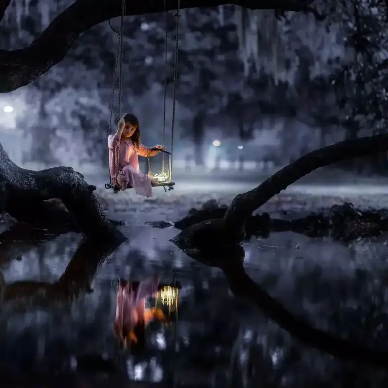
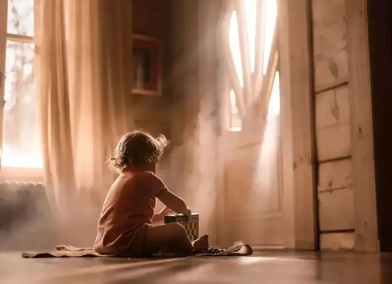
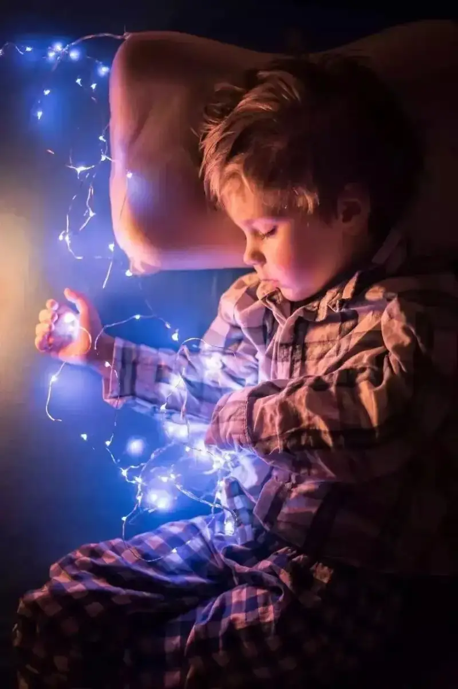
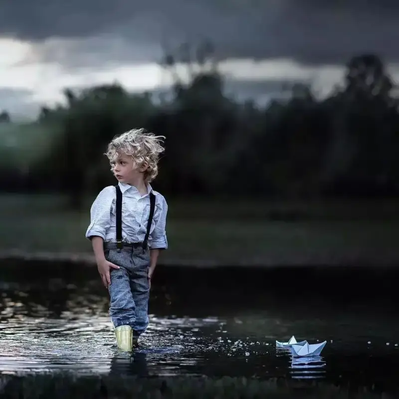